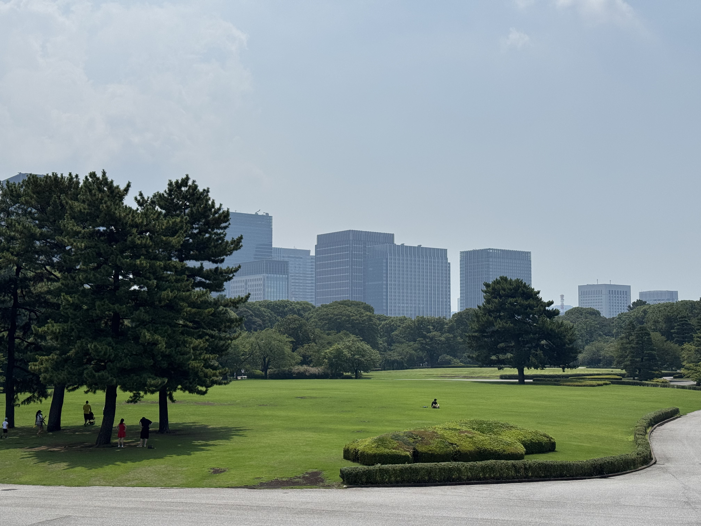
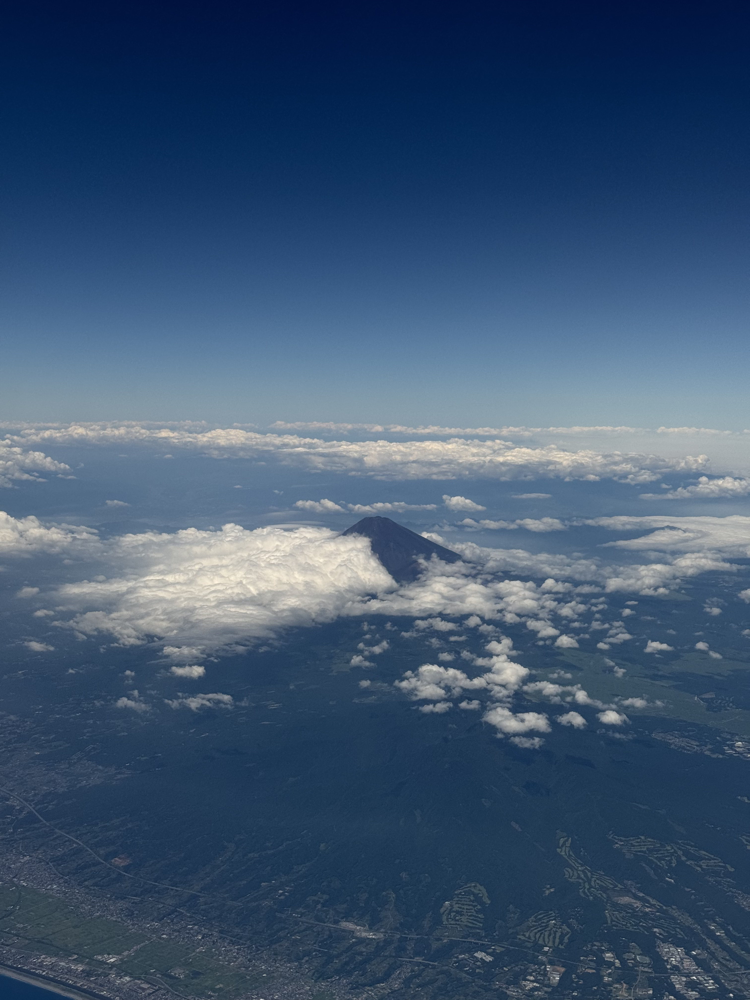

Добро пожаловать в Японию
Япония - удивительная страна, в которой сохранились древние традиции и сейчас они существуют рядом с современными технологиями. Здесь можно увидеть старинные храмы, современные небоскрёбы, цветущие сады и священные горы
Этот сайт посвящён путешествию по Японии. Здесь можно познакомиться с особенностями страны и узнать больше о трёх популярных городах - Токио, Киото и Осаке.

Вид на небоскрёбы из Императорских садов в Токио
Содержание
Япония
Япония расположена в Восточной Азии и состоит из множества островов. Страна известна своей богатой историей, уникальной культурой, красивой природой и высоким уровнем развития технологий.
Одной из особенностей Японии является сочетание традиционного и современного образа жизни. Рядом с современными торговыми центрами и небоскрёбами можно встретить древние храмы, святилища и традиционные японские сады и парки.
Что особенно характерно для Японии
- Древние храмы и святилища
- Сезон цветения сакуры и сезон момидзи
- Традиционная кухня: много свежей рыбы и идеально сваренного риса и яиц
- Современные технологии, скоростные поезда и "летающий интернет"
- Идеальная чистота на улице и отсутствие мусорок
Что стоит увидеть в Японии
Путешествие по Японии позволяет увидеть совершенно разные стороны страны. Можно отправиться в горы, посетить древние храмы или погрузиться в атмосферу современного мегаполиса.
- Гора Фудзи
- Храмы и святилища Киото
- Современный Токио
- Universal Studios Japan
- Летние курорты

Священная Гора Фудзи - один из наиболее узнаваемых символов Японии
Три города для путешествия
На сайте подробно рассмотрены три популярных у туристов города, каждый из которых позволяет увидеть Японию с разных сторон.
Токио
Огромный современный мегаполис, где небоскрёбы, магазины и высокие технологии находятся рядом с храмами и старыми районами.
Киото
Культурная столица Японии, известная храмами, святилищами, садами и традиционной архитектурой.
Осака
Экономическая столица Японии, известная своим стритфудом, оживлёнными шумными улицами и историческими достопримечательностями.
Перед поездкой
Перед путешествием в Японию стоит заранее продумать маршрут, транспорт и места проживания.
Полезная информация
- Язык: Японский; (Молодежь знает английский, но не все хорошо разговаривают)
- Валюта: Японская йена (Руб/2)
- Транспорт: Шинкансен между городами, наземные поезда, метро, автобусы, Uber
- Крупные города: Токио, Киото, Осака, Фукуока, Хиросима итд.
Для первого путешествия можно выбрать маршрут, включающий несколько крупных городов.